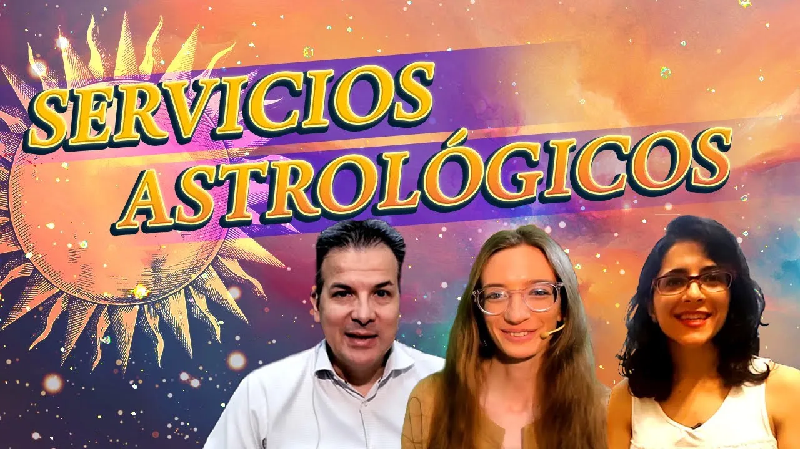

La astrología y la lectura de la carta astral pueden ser fascinantes y reveladoras.
La Carta Astral:
También conocida como carta natal o mapa astral, es una representación gráfica de la posición de los
planetas en el momento exacto de tu nacimiento. Cada planeta, signo zodiacal y casa astrológica tiene
un significado específico en esta carta. A través de la interpretación de la carta astral, los
astrólogos pueden analizar tu personalidad, tus tendencias emocionales, tus talentos innatos y las
oportunidades y desafíos que enfrentarás a lo largo de la vida.
Beneficios de Leer y Entender tu Carta Astral:
Autoconocimiento: La astrología te ayuda a conocerte mejor a ti mismo/a. Al explorar tu carta astral, descubrirás aspectos profundos de tu personalidad, tus motivaciones y tus patrones de comportamiento.
Empoderamiento: Conocer cómo te afectan los astros te da una ventaja en la vida. Saber cuál es el terreno que pisas te permite tomar decisiones más conscientes y poderosas.
Vocación y Carrera: Tu carta astral revela tus talentos naturales y las áreas en las que podrías destacar. Si tienes dudas sobre tu vocación o camino profesional, la astrología puede proporcionarte pistas valiosas.
Relaciones Interpersonales: Tu carta astral también refleja tus patrones de relación y cómo interactúas con los demás.
Crecimiento Espiritual: La astrología puede ser una herramienta de crecimiento personal. No se trata solo de leer la carta, sino de trabajar con las revelaciones que obtienes.
Potencialidades y Debilidades: Descubre tus puntos fuertes y también tus áreas de crecimiento. Los aspectos tensos en la carta son oportunidades para superarte.
Entender Pasado, Presente y Futuro: Tu carta astral contiene una riqueza de información. Al estudiarla, puedes comprender mejor tu historia, tu situación actual y las tendencias futuras.
Conexión con lo Cósmico: La astrología nos conecta con el universo de una manera especial.
Dirigido por el astrólogo y filósofo León Azulay, el Centro Aztlan es una institución dedicada al estudio y la enseñanza de la astrología, la psicología y la filosofía. Su enfoque es enseñar la astrología de manera dinámica, combinando aspectos teóricos con prácticas. Las clases son teórico-prácticas, donde los alumnos aprenden técnicas de interpretación de cartas natales.
Además de la formación, ofrecen consultoría astrológica, análisis de cartas natales y revoluciones solares.
La Escuela de Psicología y Filosofía Aztlan es parte del Centro Cultural de Psicología, Filosofía y Humanidades. Ofrece cursos, talleres y seminarios sobre la psicología de Carl G. Jung, el budismo, cine club y arte.
